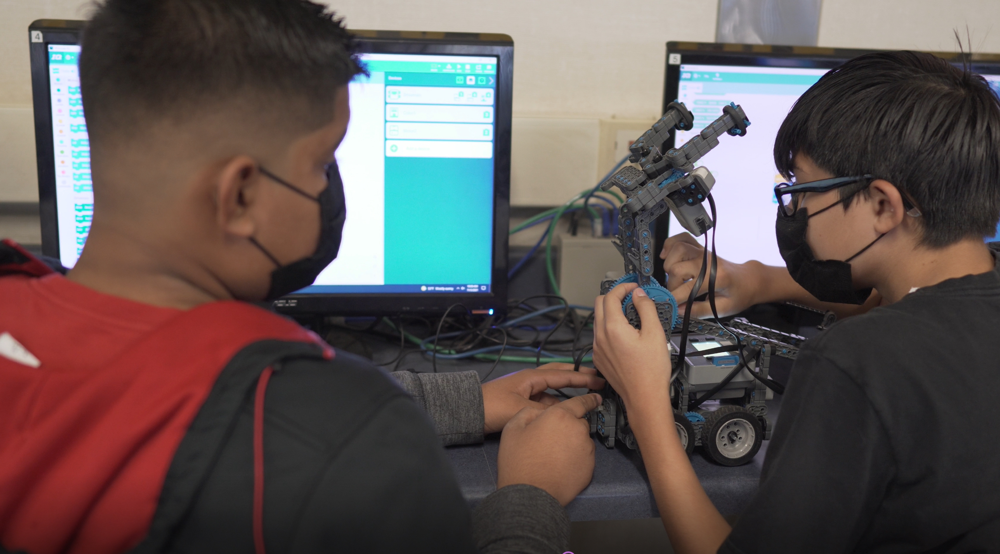
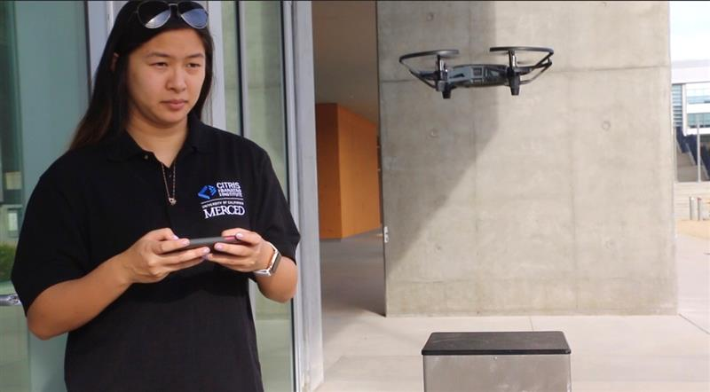

Building is Believing
San Joaquin Valley students see a future in robotics and computer science with UC Merced
February 14, 2022Written by Peter Sou, Lina B-Hernandez, Paul Conanan, Leigh Bernacchi UC Merced
University of California, Merced-- Second-year Mechanical Engineering student Lina B-Hernandez had a different experience than many young people growing up in the San Joaquin Valley. “As a middle school student, I learned to do hands-on activities with robotics and coding. This opened my eyes to the many opportunities that I would have in the future, and as a NexTech educator I hope to bring that same feeling to the middle school students.” Despite being two hours drive from Silicon Valley, the birthplace of tech, Lina’s school in Madera offering robotics is an exception rather than the rule.
CITRIS—the Center for Information Technology Research in the Interest of Society and the Banatao Institute at UC Merced—started the program in 2015 and has delivered high-quality equipment and experiences with technology via the NexTech Robotics program. The program was started by an outstanding alumna Alexus Garcia who built it from scratch based on the robot kits, working with schools to fulfill their afterschool needs and student interests.
The curriculum covers major topics of coding, design, and the interaction between hardware and software to perform a specific task, otherwise known as an embedded system. NexTech is continually adapting and introducing new curriculum to cover topics of 3-D visualization and design and the versatile computer language, Python.
Peter Sou is spending his last year at UC Merced building new units of curriculum on Python before joining the ag-tech workforce. "It's a very versatile and beginner-friendly language that can open up different avenues including web development, AI, and data science." Typically, the robots are programmed in a block or Scratch style of coding—a drag and drop format—but Python affords the students to see the next steps ahead of them. Previous educators have built units on drones, remote sensing, and HTML.
UC Merced students serve as mentors and illustrate a pathway to success in higher education. That’s what matters most to Mechanical Engineering student Paul Conanan who said that “Being a NexTech Educator allows me to give back to my community and hopefully inspire a new generation of students.”
Thanks to support from AgAID, the NSF-USDA funded AI Institute for Transforming Workforce & Decision Support program, and Siemens, NexTech has continued to expand and to serve more students in the region, even during the learn-from-home time in 2021.
CITRIS UC Merced Director Joshua Viers said, “Since its inception, NexTech has embodied what is best about UC Merced and its students and our community. NexTech provides not only opportunities for local middle schoolers to learn about cool new tech and how to build and program robots – useful skills in our digital age – but also provides opportunities for UC Merced students to learn something about themselves as they share their knowledge and experiences with the soon-to-be next generation of tech leaders from the San Joaquin Valley.”
